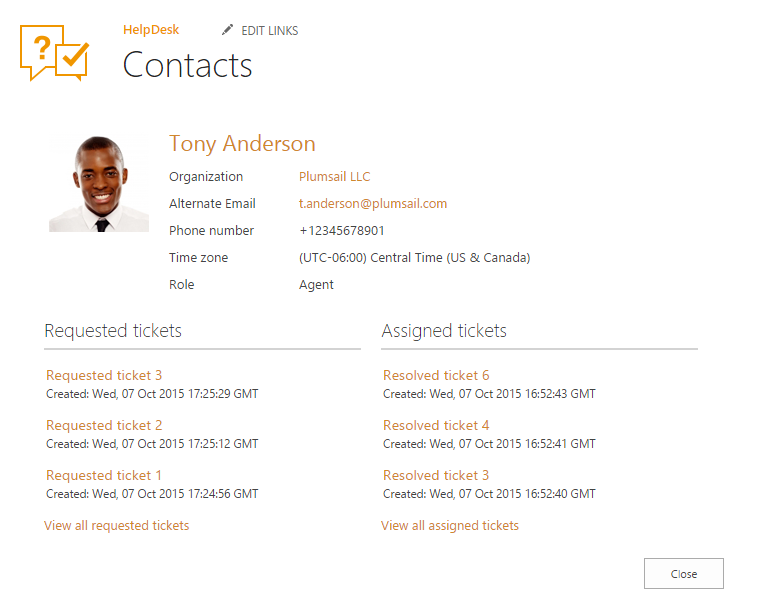

Contacts¶
Contacts is a directory of persons that HelpDesk is aware of. There are three predefined contact roles:
- Agent – SharePoint user that processes tickets.
- Member - SharePoint user that creates tickets.
- End-User - User without SharePoint account who creates tickets by email.
Navigate to Contacts using the icon on the navbar:

Use the “Contacts” list to manage information about everyone who operates HelpDesk. End-Users and Members are created automatically when a new ticket is received by email. If the requester has a SharePoint account he becomes a member, if the requester doesn’t have a SharePoint account, he becomes an End-User. And you have to manually add all agents who work with HelpDesk.

To find out more about one of the contacts in this list click his full name. You will see a card of the contact with information about his organization, email address, phone number, role and time zone. There are also two views with recent tickets related to current contact:
- Requested tickets – recent tickets that were requested by the contact.
- Assigned tickets – recent tickets that current contact is an assignee of.
Note: the views are visible only if there are tickets related to the current contact.

Additional information about of the contact card fields:
- Organization: look up to Organizations list item. You can create a new organization without leaving the currently opened form by clicking “Add new”.
- Role: defines occupation of the current person: Agent - SharePoint user who processes tickets. Member- SharePoint user who creates tickets. End-User- User without a SharePoint account who creates tickets by email.
- SharePoint user/Email: Either one is displayed, depending on the current person’s role. If he is an agent or a member – his name becomes a link to his SharePoint user page, otherwise his Email is displayed.